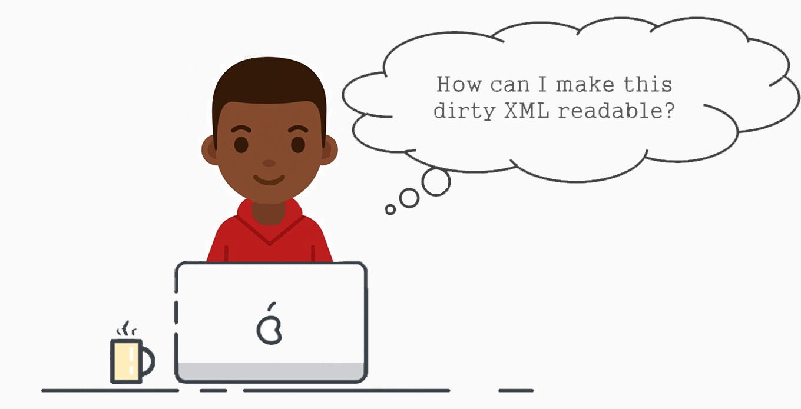

Extensible Markup Language (XML) is a markup language that defines a set of rules for encoding documents in a format that is both human-readable and machine-readable.
The World Wide Web Consortium's XML 1.0 Specification[2] of 1998[3] and several other related specifications[4]—all of them free open standards—define XML.[5] The design goals of XML emphasize simplicity, generality, and usability across the Internet.[6] It is a textual data format with strong support via Unicode for different human languages. Although the design of XML focuses on documents, the language is widely used for the representation of arbitrary data structures[7] such as those used in web services. Several schema systems exist to aid in the definition of XML-based languages, while programmers have developed many application programming interfaces (APIs) to aid the processing of XML data.
The essence of why extensible markup languages are necessary is explained at Markup language (for example, see Markup language § XML) and at Standard Generalized Markup Language. Hundreds of document formats using XML syntax have been developed,[8] including RSS, Atom, SOAP, SVG, and XHTML. XML-based formats have become the default for many office-productivity tools, including Microsoft Office (Office Open XML), OpenOffice.org and LibreOffice (OpenDocument), and Apple's iWork[citation needed]. XML has also provided the base language for communication protocols such as XMPP. Applications for the Microsoft .NET Framework use XML files for configuration, and property lists are an implementation of configuration storage built on XML.[9] Many industry data standards, such as Health Level 7, OpenTravel Alliance, FpML, MISMO, and National Information Exchange Model are based on XML and the rich features of the XML schema specification. Many of these standards are quite complex and it is not uncommon for a specification to comprise several thousand pages.[citation needed] In publishing, Darwin Information Typing Architecture is an XML industry data standard. XML is used extensively to underpin various publishing formats. XML is widely used in a Services Oriented Architecture (SOA). Disparate systems communicate with each other by exchanging XML messages. The message exchange format is standardised as an XML schema (XSD). This is also referred to as the canonical schema. XML has come into common use for the interchange of data over the Internet. IETF RFC:3023, now superseded by RFC:7303, gave rules for the construction of Internet Media Types for use when sending XML. It also defines the media types application/xml and text/xml, which say only that the data is in XML, and nothing about its semantics. RFC 7303 also recommends that XML-based languages be given media types ending in +xml; for example image/svg+xml for SVG. Further guidelines for the use of XML in a networked context appear in RFC 3470, also known as IETF BCP 70, a document covering many aspects of designing and deploying an XML-based language.